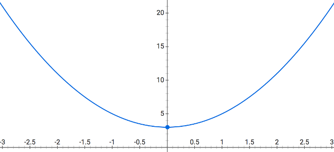

Functional-Light JavaScript
Chapter 2: The Nature Of Functions
Functional Programming is not just programming with the function keyword.
Oh, if only it was that easy -- I could end the book right here! Nevertheless,
functions really are at the center of FP. And it's how we use functions that
makes our code functional.
But how sure are you that you know what function really means?
In this chapter, we're going to lay the groundwork for the rest of the book by exploring all the foundational aspects of functions. Actually, this is a review of all the things even a non-FP programmer should know about functions. But certainly if we want to get the most out of FP concepts, it's essential we know functions inside and out.
Brace yourself, because there's a lot more to the function than you may have realized.
What Is a Function?
The question "What is a function?" superficially seems to have an obvious answer: a function is a collection of code that can be executed one or more times.
While this definition is reasonable, it's missing some very important essence that is the core of a function as it applies to FP. So let's dig below the surface to understand functions more completely.
Brief Math Review
I know I've promised we'd stay away from math as much as possible, but bear with me for a moment as we quickly observe some fundamental things about functions and graphs from algebra before we proceed.
Do you remember learning anything about f(x) back in school? What about the
equation y = f(x)?
Let's say an equation is defined like this: f(x) = 2x2 +
3. What does that mean? What does it mean to graph that equation? Here's
the graph:

What you can notice is that for any value of x, say 2, if you plug it into
the equation, you get 11. What is 11, though? It's the return value of the
f(x) function, which earlier we said represents a y value.
In other words, we can choose to interpret the input and output values as a
point at (2,11) on that curve in the graph. And for every value of x we plug
in, we get another y value that pairs with it as a coordinate for a point.
Another is (0,3), and another is (-1,5). Put all those points together, and
you have the graph of that parabolic curve as shown here.
So what's any of this got to do with FP?
In math, a function always takes input(s), and always gives an output. A term you'll often hear around FP is "morphism"; this is a fancy way of describing a set of values that maps to another set of values, like the inputs of a function related to the outputs of that function.
In algebraic math, those inputs and outputs are often interpreted as components of coordinates to be graphed. In our programs, however, we can define functions with all sorts of input(s) and output(s), even though they'll rarely be interpreted as a visually plotted curve on a graph.
Function vs Procedure
So why all the talk of math and graphs? Because essentially Functional Programming is about embracing using functions as functions in this mathematical sense.
You may be more accustomed to thinking of functions as procedures. What's the
difference? A procedure is an arbitrary collection of functionality. It may have
inputs, it may not. It may have an output (return value), it may not.
A function takes input(s) and definitely always has a return value.
If you plan to do Functional Programming, you should be using functions as
much as possible, and trying to avoid procedures wherever possible. All your
functions should take input(s) and return output(s).
Why? The answer to that will have many levels of meaning that we'll uncover throughout this book.
Function Input
So far, we can conclude that functions must expect input. But let's dig into how function inputs work.
You sometimes hear people refer to these inputs as "arguments" and sometimes as "parameters". So what's that all about?
Arguments are the values you pass in, and parameters are the named variables inside the function that receive those passed-in values. Example:
function foo(x, y) {
// ..
}
var a = 3;
foo(a, a * 2);
a and a * 2 (actually, the result of a * 2, which is 6) are the
arguments to the foo(..) call. x and y are the parameters that receive
the argument values (3 and 6, respectively).
Note: In JavaScript, there's no requirement that the number of arguments
matches the number of parameters. If you pass more arguments than you have
declared parameters to receive them, the values pass in just fine untouched.
These values can be accessed in a few different ways, including the old-school
arguments object you may have heard of before. If you pass fewer arguments
than the declared parameters, each unmatched parameter is treated as an
"undefined" variable, meaning it's present and available in the scope of the
function, but just starts out with the empty undefined value.
Defaulting Parameters
As of ES6, parameters can declare default values. In the case where the
argument for that parameter is not passed, or it's passed the value undefined,
the default assignment expression is substituted.
Consider:
function foo(x = 3) {
console.log(x);
}
foo(); // 3
foo(undefined); // 3
foo(null); // null
foo(0); // 0
It's always a good practice to think about any default cases that can aid the usability of your functions. However, defaulting parameters can lead to more complexity in terms of reading and understanding the variations of how a function is called. Be judicious in how much you rely on this feature.
Counting Inputs
The number of arguments a function "expects" -- how many arguments you'll likely want to pass to it -- is determined by the number of parameters that are declared:
function foo(x, y, z) {
// ..
}
foo(..) expects three arguments, because it has three declared parameters.
This count has a special term: arity. Arity is the number of parameters in a
function declaration. The arity of foo(..) is 3.
Furthermore, a function with arity 1 is also called "unary", a function with arity 2 is also called "binary", and a function with arity 3 or higher is called "n-ary".
You may wish to inspect a function reference during the runtime of a program to
determine its arity. This can be done with the length property of that
function reference:
function foo(x, y, z) {
// ..
}
foo.length; // 3
One reason for determining the arity during execution would be if a piece of code received a function reference from multiple sources, and sent different values depending on the arity of each.
For example, imagine a case where an fn function reference could expect one,
two, or three arguments, but you always want to just pass a variable x in the
last position:
// `fn` is set to some function reference
// `x` exists with some value
if (fn.length == 1) {
fn(x);
} else if (fn.length == 2) {
fn(undefined, x);
} else if (fn.length == 3) {
fn(undefined, undefined, x);
}
Tip: The length property of a function is read-only and it's determined at
the time you declare the function. It should be thought of as essentially a
piece of metadata that describes something about the intended usage of the
function.
One gotcha to be aware of is that certain kinds of parameter list variations can
make the length property of the function report something different than you
might expect:
function foo(x, y = 2) {
// ..
}
function bar(x, ...args) {
// ..
}
function baz({ a, b }) {
// ..
}
foo.length; // 1
bar.length; // 1
baz.length; // 1
What about counting the number of arguments the current function call received?
This was once trivial, but now the situation is slightly more complicated. Each
function has an arguments object (array-like) available that holds a reference
to each of the arguments passed in. You can then inspect the length property
of arguments to figure out how many were actually passed:
function foo(x, y, z) {
console.log(arguments.length);
}
foo(3, 4); // 2
As of ES5 (and strict mode, specifically), arguments is considered by some to
be sort of deprecated; many avoid using it if possible. In JS, we "never" break
backward compatibility no matter how helpful that may be for future progress, so
arguments will never be removed. But it's now commonly suggested that you
avoid using it whenever possible.
However, I suggest that arguments.length, and only that, is OK to keep using
for those cases where you need to care about the passed number of arguments. A
future version of JS might possibly add a feature that offers the ability to
determine the number of arguments passed without consulting arguments.length;
if that happens, then we can fully drop usage of arguments!
Be careful: never access arguments positionally, like arguments[1]. Stick
to arguments.length only, and only if you must.
Except, how will you access an argument that was passed in a position beyond the declared parameters? I'll answer that in a moment; but first, take a step back and ask yourself, "Why would I want to do that?" Seriously. Think about that closely for a minute.
It should be pretty rare that this occurs; it shouldn't be something you regularly expect or rely on when writing your functions. If you find yourself in such a scenario, spend an extra 20 minutes trying to design the interaction with that function in a different way. Name that extra argument even if it's exceptional.
A function signature that accepts an indeterminate amount of arguments is referred to as a variadic function. Some people prefer this style of function design, but I think you'll find that often the FPer wants to avoid these where possible.
OK, enough harping on that point.
Say you do need to access the arguments in a positional array-like way, possibly because you're accessing an argument that doesn't have a formal parameter at that position. How do we do it?
ES6 to the rescue! Let's declare our function with the ... operator --
variously referred to as "spread", "rest", or (my preference) "gather":
function foo(x, y, z, ...args) {
// ..
}
See the ...args in the parameter list? That's an ES6 declarative form that
tells the engine to collect (ahem, "gather") all remaining arguments (if any)
not assigned to named parameters, and put them in a real array named args.
args will always be an array, even if it's empty. But it will not include
values that are assigned to the x, y, and z parameters, only anything else
that's passed in beyond those first three values:
function foo(x, y, z, ...args) {
console.log(x, y, z, args);
}
foo(); // undefined undefined undefined []
foo(1, 2, 3); // 1 2 3 []
foo(1, 2, 3, 4); // 1 2 3 [ 4 ]
foo(1, 2, 3, 4, 5); // 1 2 3 [ 4, 5 ]
So, if you really want to design a function that can account for an arbitrary
number of arguments to be passed in, use ...args (or whatever name you like)
on the end. Now, you'll have a real, non-deprecated, non-yucky array to access
those argument values from.
Just pay attention to the fact that the value 4 is at position 0 of that
args, not position 3. And its length value won't include those three 1,
2, and 3 values. ...args gathers everything else, not including the x,
y, and z.
You can use the ... operator in the parameter list even if there's no other
formal parameters declared:
function foo(...args) {
// ..
}
Now args will be the full array of arguments, whatever they are, and you can
use args.length to know exactly how many arguments have been passed in. And
you're safe to use args[1] or args[317] if you so choose. Please don't pass
in 318 arguments, though.
Arrays of Arguments
What if you wanted to pass along an array of values as the arguments to a function call?
function foo(...args) {
console.log(args[3]);
}
var arr = [1, 2, 3, 4, 5];
foo(...arr); // 4
Our new friend ... is used, but now not just in the parameter list; it's also
used in the argument list at the call-site. It has the opposite behavior in this
context. In a parameter list, we said it gathered arguments together. In an
argument list, it spreads them out. So the contents of arr are actually
spread out as individual arguments to the foo(..) call. Do you see how that's
different from just passing in a reference to the whole arr array?
By the way, multiple values and ... spreadings can be interleaved, as you see
fit:
var arr = [2];
foo(1, ...arr, 3, ...[4, 5]); // 4
Think of ... in this symmetric sense: in a value-list position, it spreads.
In an assignment position -- like a parameter list, because arguments get
assigned to parameters -- it gathers.
Whichever behavior you invoke, ... makes working with arrays of arguments much
easier. Gone are the days of slice(..), concat(..), and apply(..) to
wrangle our argument value arrays.
Tip: Actually, these methods are not entirely useless. There will be a few
places we rely on them throughout the code in this book. But certainly in most
places, ... will be much more declaratively readable, and preferable as a
result.
Parameter Destructuring
Consider the variadic foo(..) from the previous section:
function foo(...args) {
// ..
}
foo(...[1, 2, 3]);
What if we wanted to change that interaction so the caller of our function
passes in an array of values instead of individual argument values? Just drop
the two ... usages:
function foo(args) {
// ..
}
foo([1, 2, 3]);
Simple enough. But what if now we wanted to give a parameter name to each of the first two values in the passed-in array? We aren't declaring individual parameters anymore, so it seems we lost that ability.
Thankfully, ES6 destructuring is the answer. Destructuring is a way to declare a pattern for the kind of structure (object, array, etc.) that you expect to see, and how decomposition (assignment) of its individual parts should be processed.
Consider:
function foo([x, y, ...args] = []) {
// ..
}
foo([1, 2, 3]);
Do you spot the [ .. ] brackets around the parameter list now? This is called
array parameter destructuring.
In this example, destructuring tells the engine that an array is expected in
this assignment position (aka parameter). The pattern says to take the first
value of that array and assign to a local parameter variable called x, the
second to y, and whatever is left is gathered into args.
The Importance of Declarative Style
Considering the destructured foo(..) we just looked at, we could instead have
processed the parameters manually:
function foo(params) {
var x = params[0];
var y = params[1];
var args = params.slice(2);
// ..
}
But here we highlight a principle we only briefly introduced in Chapter 1: declarative code communicates more effectively than imperative code.
Declarative code (for example, the destructuring in the former foo(..)
snippet, or the ... operator usages) focuses on what the outcome of a piece of
code should be.
Imperative code (such as the manual assignments in the latter snippet) focuses more on how to get the outcome. If you later read such imperative code, you have to mentally execute all of it to understand the desired outcome. The outcome is coded there, but it's not as clear because it's clouded by the details of how we get there.
The earlier foo(..) is regarded as more readable, because the destructuring
hides the unnecessary details of how to manage the parameter inputs; the
reader is free to focus only on what we will do with those parameters. That's
clearly the most important concern, so it's what the reader should be focused on
to understand the code most completely.
Wherever possible, and to whatever degrees our language and our libraries/frameworks will let us, we should be striving for declarative, self-explanatory code.
Named Arguments
Just as we can destructure array parameters, we can destructure object parameters:
function foo({ x, y } = {}) {
console.log(x, y);
}
foo({
y: 3
}); // undefined 3
We pass in an object as the single argument, and it's destructured into two
separate parameter variables x and y, which are assigned the values of those
corresponding property names from the object passed in. It didn't matter that
the x property wasn't on the object; it just ended up as a variable with
undefined like you'd expect.
But the part of parameter object destructuring I want you to pay attention to is
the object being passed into foo(..).
With a normal call-site like foo(undefined,3), position is used to map from
argument to parameter; we put the 3 in the second position to get it assigned
to a y parameter. But at this new kind of call-site where parameter
destructuring is involved, a simple object-property indicates which parameter
(y) the argument value 3 should be assigned to.
We didn't have to account for x in that call-site because in effect we
didn't care about x. We just omitted it, instead of having to do something
distracting like passing undefined as a positional placeholder.
Some languages have an explicit feature for this: named arguments. In other words, at the call-site, labeling an input value to indicate which parameter it maps to. JavaScript doesn't have named arguments, but parameter object destructuring is the next best thing.
Another FP-related benefit of using an object destructuring to pass in potentially multiple arguments is that a function that only takes one parameter (the object) is much easier to compose with another function's single output. Much more on that in Chapter 4.
Unordered Parameters
Another key benefit is that named arguments, by virtue of being specified as object properties, are not fundamentally ordered. That means we can specify inputs in whatever order we want:
function foo({ x, y } = {}) {
console.log(x, y);
}
foo({
y: 3
}); // undefined 3
We're skipping the x parameter by simply omitting it. Or we could specify an
x argument if we cared to, even if we listed it after y in the object
literal. The call-site is no longer cluttered by ordered-placeholders like
undefined to skip a parameter.
Named arguments are much more flexible, and attractive from a readability perspective, especially when the function in question can take three, four, or more inputs.
Tip: If this style of function arguments seems useful or interesting to you, check out coverage of my FPO library in Appendix C.
Function Output
Let's shift our attention from a function's inputs to its output.
In JavaScript, functions always return a value. These three functions all have
identical return behavior:
function foo() {}
function bar() {
return;
}
function baz() {
return undefined;
}
The undefined value is implicitly returned if you have no return or if you
just have an empty return;.
But keeping as much with the spirit of FP function definition as possible --
using functions and not procedures -- our functions should always have outputs,
which means they should explicitly return a value, and usually not
undefined.
A return statement can only return a single value. So if your function needs
to return multiple values, your only viable option is to collect them into a
compound value like an array or an object:
function foo() {
var retValue1 = 11;
var retValue2 = 31;
return [retValue1, retValue2];
}
Then, we'll assign x and y from two respective items in the array that comes
back from foo():
var [x, y] = foo();
console.log(x + y); // 42
Collecting multiple values into an array (or object) to return, and subsequently destructuring those values back into distinct assignments, is a way to transparently express multiple outputs for a function.
Tip: I'd be remiss if I didn't suggest you take a moment to consider if a function needing multiple outputs could be refactored to avoid that, perhaps separated into two or more smaller single-purpose functions? Sometimes that will be possible, sometimes not; but you should at least consider it.
Early Returns
The return statement doesn't just return a value from a function. It's also a
flow control structure; it ends the execution of the function at that point. A
function with multiple return statements thus has multiple possible exit
points, meaning that it may be harder to read a function to understand its
output behavior if there are many paths that could produce that output.
Consider:
function foo(x) {
if (x > 10) return x + 1;
var y = x / 2;
if (y > 3) {
if (x % 2 == 0) return x;
}
if (y > 1) return y;
return x;
}
Pop quiz: without cheating and running this code in your browser, what does
foo(2) return? What about foo(4)? And foo(8)? And foo(12)?
How confident are you in your answers? How much mental tax did you pay to get those answers? I got it wrong the first two times I tried to think it through, and I wrote it!
I think part of the readability problem here is that we're using return not
just to return different values, but also as a flow control construct to quit a
function's execution early in certain cases. There are obviously better ways to
write that flow control (the if logic, etc.), but I also think there are ways
to make the output paths more obvious.
Note: The answers to the pop quiz are 2, 2, 8, and 13.
Consider this version of the code:
function foo(x) {
var retValue;
if (retValue == undefined && x > 10) {
retValue = x + 1;
}
var y = x / 2;
if (y > 3) {
if (retValue == undefined && x % 2 == 0) {
retValue = x;
}
}
if (retValue == undefined && y > 1) {
retValue = y;
}
if (retValue == undefined) {
retValue = x;
}
return retValue;
}
This version is unquestionably more verbose. But I would argue it's slightly
simpler logic to follow, because every branch where retValue can get set is
guarded by the condition that checks if it's already been set.
Rather than returning from the function early, we used normal flow control
(if logic) to determine the retValue's assignment. At the end, we simply
return retValue.
I'm not unconditionally saying that you should always have a single return, or
that you should never do early returns, but I do think you should be careful
about the flow control part of return creating more implicitness in your
function definitions. Try to figure out the most explicit way to express the
logic; that will often be the best way.
Unreturned Outputs
One technique that you've probably used in most code you've written, and maybe didn't even think about it much, is to have a function output some or all of its values by simply changing variables outside itself.
Remember our f(x) = 2x2 + 3 function from earlier in the
chapter? We could have defined it like this in JS:
var y;
function f(x) {
y = 2 * Math.pow(x, 2) + 3;
}
f(2);
y; // 11
I know this is a silly example; we could just as easily have returnd the value
instead of setting it into y from within the function:
function f(x) {
return 2 * Math.pow(x, 2) + 3;
}
var y = f(2);
y; // 11
Both functions accomplish the same task, so is there any reason we should pick one version over the other? Yes, absolutely.
One way to explain the difference is that the return in the latter version
signals an explicit output, whereas the y assignment in the former is an
implicit output. You may already have some intuition that guides you in such
cases; typically, developers prefer explicit patterns over implicit ones.
But changing a variable in an outer scope, as we did with the y assignment
inside of foo(..), is just one way of achieving an implicit output. A more
subtle example is making changes to non-local values via reference.
Consider:
function sum(list) {
var total = 0;
for (let i = 0; i < list.length; i++) {
if (!list[i]) list[i] = 0;
total = total + list[i];
}
return total;
}
var nums = [1, 3, 9, 27, , 84];
sum(nums); // 124
The most obvious output from this function is the sum 124, which we explicitly
returned. But do you spot the other output? Try that code and then inspect the
nums array. Now do you spot the difference?
Instead of an undefined empty slot value in position 4, now there's a 0.
The harmless looking list[i] = 0 operation ended up affecting the array value
on the outside, even though we operated on a local list parameter variable.
Why? Because list holds a reference-copy of the nums reference, not a
value-copy of the [1,3,9,..] array value. JavaScript uses references and
reference-copies for arrays, objects, and functions, so we may create an
accidental output from our function all too easily.
This implicit function output has a special name in the FP world: side effects. And a function that has no side effects also has a special name: pure function. We'll talk a lot more about these in Chapter 5, but the punchline is that we'll want to prefer pure functions and avoid side effects wherever possible.
Functions of Functions
Functions can receive and return values of any type. A function that receives or returns one or more other function values has the special name: higher-order function.
Consider:
function forEach(list, fn) {
for (let v of list) {
fn(v);
}
}
forEach([1, 2, 3, 4, 5], function each(val) {
console.log(val);
});
// 1 2 3 4 5
forEach(..) is a higher-order function because it receives a function as an
argument.
A higher-order function can also output another function, like:
function foo() {
return function inner(msg) {
return msg.toUpperCase();
};
}
var f = foo();
f("Hello!"); // HELLO!
return is not the only way to "output" an inner function:
function foo() {
return bar(function inner(msg) {
return msg.toUpperCase();
});
}
function bar(func) {
return func("Hello!");
}
foo(); // HELLO!
Functions that treat other functions as values are higher-order functions by definition. FPers write these all the time!
Keeping Scope
One of the most powerful things in all of programming, and especially in FP, is how a function behaves when it's inside another function's scope. When the inner function makes reference to a variable from the outer function, this is called closure.
Defined pragmatically:
Closure is when a function remembers and accesses variables from outside of its own scope, even when that function is executed in a different scope.
Consider:
function foo(msg) {
var fn = function inner() {
return msg.toUpperCase();
};
return fn;
}
var helloFn = foo("Hello!");
helloFn(); // HELLO!
The msg parameter variable in the scope of foo(..) is referenced inside the
inner function. When foo(..) is executed and the inner function is created, it
captures the access to the msg variable, and retains that access even after
being returned.
Once we have helloFn, a reference to the inner function, foo(..) has
finished and it would seem as if its scope should have gone away, meaning the
msg variable would no longer exist. But that doesn't happen, because the inner
function has a closure over msg that keeps it alive. The closed over msg
variable survives for as long as the inner function (now referenced by helloFn
in a different scope) stays around.
Let's look at a few more examples of closure in action:
function person(name) {
return function identify() {
console.log(`I am ${name}`);
};
}
var fred = person("Fred");
var susan = person("Susan");
fred(); // I am Fred
susan(); // I am Susan
The inner function identify() has closure over the parameter name.
The access that closure enables is not restricted to merely reading the variable's original value -- it's not just a snapshot but rather a live link. You can update the value, and that new current state remains remembered until the next access:
function runningCounter(start) {
var val = start;
return function current(increment = 1) {
val = val + increment;
return val;
};
}
var score = runningCounter(0);
score(); // 1
score(); // 2
score(13); // 15
Warning: For reasons that we'll explore in more depth later in the book,
this example of using closure to remember a state that changes (val) is
probably something you'll want to avoid where possible.
If you have an operation that needs two inputs, one of which you know now but the other will be specified later, you can use closure to remember the first input:
function makeAdder(x) {
return function sum(y) {
return x + y;
};
}
// we already know `10` and `37` as first inputs, respectively
var addTo10 = makeAdder(10);
var addTo37 = makeAdder(37);
// later, we specify the second inputs
addTo10(3); // 13
addTo10(90); // 100
addTo37(13); // 50
Normally, a sum(..) function would take both an x and y input to add them
together. But in this example we receive and remember (via closure) the x
value(s) first, while the y value(s) are separately specified later.
Note: This technique of specifying inputs in successive function calls is very common in FP, and comes in two forms: partial application and currying. We'll dive into them more thoroughly in Chapter 3.
Of course, since functions are just values in JS, we can remember function values via closure:
function formatter(formatFn) {
return function inner(str) {
return formatFn(str);
};
}
var lower = formatter(function formatting(v) {
return v.toLowerCase();
});
var upperFirst = formatter(function formatting(v) {
return v[0].toUpperCase() + v.substr(1).toLowerCase();
});
lower("WOW"); // wow
upperFirst("hello"); // Hello
Instead of distributing/repeating the toUpperCase() and toLowerCase() logic
all over our code, FP encourages us to create simple functions that encapsulate
-- a fancy way of saying wrapping up -- that behavior.
Specifically, we create two simple unary functions lower(..) and
upperFirst(..), because those functions will be much easier to wire up to work
with other functions in the rest of our program.
Tip: Did you spot how upperFirst(..) could have used lower(..)?
We'll use closure heavily throughout the rest of the text. It may just be the most important foundational practice in all of FP, if not programming as a whole. Make sure you're really comfortable with it!
Syntax
Before we move on from this primer on functions, let's take a moment to discuss their syntax.
More than many other parts of this text, the discussions in this section are mostly opinion and preference, whether you agree with the views presented here or take opposite ones. These ideas are highly subjective, though many people seem to feel rather absolutely about them.
Ultimately, you get to decide.
What's in a Name?
Syntactically speaking, function declarations require the inclusion of a name:
function helloMyNameIs() {
// ..
}
But function expressions can come in both named and anonymous forms:
foo(function namedFunctionExpr() {
// ..
});
bar(function() {
// <-- look, no name!
// ..
});
What exactly do we mean by anonymous, by the way? Specifically, functions have a
name property that holds the string value of the name the function was given
syntactically, such as "helloMyNameIs" or "namedFunctionExpr". This name
property is most notably used by the console/developer tools of your JS
environment to list the function when it participates in a stack trace (usually
from an exception).
Anonymous functions are generally displayed as (anonymous function).
If you've ever had to debug a JS program from nothing but a stack trace of an
exception, you probably have felt the pain of seeing (anonymous function)
appear line after line. This listing doesn't give a developer any clue
whatsoever as to the path the exception came from. It's not doing the developer
any favors.
If you name your function expressions, the name is always used. So if you use a
good name like handleProfileClicks instead of foo, you'll get much more
helpful stack traces.
As of ES6, anonymous function expressions are in certain cases aided by name inferencing. Consider:
var x = function() {};
x.name; // x
If the engine is able to guess what name you probably want the function to take, it will go ahead and do so.
But beware, not all syntactic forms benefit from name inferencing. Probably the most common place a function expression shows up is as an argument to a function call:
function foo(fn) {
console.log(fn.name);
}
var x = function() {};
foo(x); // x
foo(function() {}); //
When the name can't be inferred from the immediate surrounding syntax, it
remains an empty string. Such a function will be reported as
(anonymous function) in a stack trace should one occur.
There are other benefits to a function being named besides the debugging question. First, the syntactic name (aka lexical name) is useful for internal self-reference. Self-reference is necessary for recursion (both sync and async) and also helpful with event handlers.
Consider these different scenarios:
// sync recursion:
function findPropIn(propName, obj) {
if (obj == undefined || typeof obj != "object") return;
if (propName in obj) {
return obj[propName];
} else {
for (let prop of Object.keys(obj)) {
let ret = findPropIn(propName, obj[prop]);
if (ret !== undefined) {
return ret;
}
}
}
}
// async recursion:
setTimeout(function waitForIt() {
// does `it` exist yet?
if (!o.it) {
// try again later
setTimeout(waitForIt, 100);
}
}, 100);
// event handler unbinding
document.getElementById("onceBtn").addEventListener(
"click",
function handleClick(evt) {
// unbind event
evt.target.removeEventListener("click", handleClick, false);
// ..
},
false
);
In all these cases, the named function's lexical name was a useful and reliable self-reference from inside itself.
Moreover, even in simple cases with one-liner functions, naming them tends to make code more self-explanatory and thus easier to read for those who haven't read it before:
people.map(function getPreferredName(person) {
return person.nicknames[0] || person.firstName;
});
// ..
The function name getPreferredName(..) tells the reader something about what
the mapping operation is intending to do that is not entirely obvious from just
its code. This name label helps the code be more readable.
Another place where anonymous function expressions are common is with immediately invoked function expressions (IIFEs):
(function() {
// look, I'm an IIFE!
})();
You virtually never see IIFEs using names for their function expressions, but they should. Why? For all the same reasons we just went over: stack trace debugging, reliable self-reference, and readability. If you can't come up with any other name for your IIFE, at least use the word IIFE:
(function IIFE() {
// You already knew I was an IIFE!
})();
What I'm getting at is there are multiple reasons why named functions are always more preferable to anonymous functions. As a matter of fact, I'd go so far as to say that there's basically never a case where an anonymous function is more preferable. They just don't really have any advantage over their named counterparts.
It's incredibly easy to write anonymous functions, because it's one less name we have to devote our mental attention to figuring out.
I'll be honest; I'm as guilty of this as anyone. I don't like to struggle with naming. The first few names I come up with for a function are usually bad. I have to revisit the naming over and over. I'd much rather just punt with a good ol' anonymous function expression.
But we're trading ease-of-writing for pain-of-reading. This is not a good trade-off. Being lazy or uncreative enough to not want to figure out names for your functions is an all too common, but poor, excuse for using anonymous functions.
Name every single function. And if you sit there stumped, unable to come up with a good name for some function you've written, I'd strongly suggest you don't fully understand that function's purpose yet -- or it's just too broad or abstract. You need to go back and re-design the function until this is more clear. And by that point, a name will become more apparent.
In my practice, if I don't have a good name to use for a function, I name it
TODO initially. I'm certain that I'll at least catch that later when I search
for "TODO" comments before committing code.
I can testify from my own experience that in the struggle to name something well, I usually have come to understand it better, later, and often even refactor its design for improved readability and maintainability.
This time investment is well worth it.
Functions Without function
So far we've been using the full canonical syntax for functions. But you've no
doubt also heard all the buzz around the ES6 => arrow function syntax.
Compare:
people.map(function getPreferredName(person) {
return person.nicknames[0] || person.firstName;
});
// vs.
people.map(person => person.nicknames[0] || person.firstName);
Whoa.
The keyword function is gone, so is return, the parentheses (( )), the
curly braces ({ }), and the innermost semicolon (;). In place of all that,
we used a so-called fat arrow symbol (=>).
But there's another thing we omitted. Did you spot it? The getPreferredName
function name.
That's right; => arrow functions are lexically anonymous; there's no way to
syntactically provide it a name. Their names can be inferred like regular
functions, but again, the most common case of function expression values passed
as arguments won't get any assistance in that way. Bummer.
If person.nicknames isn't defined for some reason, an exception will be
thrown, meaning this (anonymous function) will be at the top of the stack
trace. Ugh.
Honestly, the anonymity of => arrow functions is a => dagger to the heart,
for me. I cannot abide by the loss of naming. It's harder to read, harder to
debug, and impossible to self-reference.
But if that wasn't bad enough, the other slap in the face is that there's a whole bunch of subtle syntactic variations that you must wade through if you have different scenarios for your function definition. I'm not going to cover all of them in detail here, but briefly:
people.map(person => person.nicknames[0] || person.firstName);
// multiple parameters? need ( )
people.map((person, idx) => person.nicknames[0] || person.firstName);
// parameter destructuring? need ( )
people.map(({ person }) => person.nicknames[0] || person.firstName);
// parameter default? need ( )
people.map((person = {}) => person.nicknames[0] || person.firstName);
// returning an object? need ( )
people.map(person => ({
preferredName: person.nicknames[0] || person.firstName
}));
The case for excitement over => in the FP world is primarily that it follows
almost exactly from the mathematical notation for functions, especially in FP
languages like Haskell. The shape of => arrow function syntax communicates
mathematically.
Digging even further, I'd suggest that the argument in favor of => is that by
using much lighter-weight syntax, we reduce the visual boundaries between
functions which lets us use simple function expressions much like we'd use lazy
expressions -- another favorite of the FPer.
I think most FPers are going to wave off the concerns I'm sharing. They love anonymous functions and they love saving on syntax. But like I said before: you decide.
Note: Though I do not prefer to use => in practice in my production code,
they are useful in quick code explorations. Moreover, we will use arrow
functions in many places throughout the rest of this book -- especially when we
present typical FP utilities -- where conciseness is preferred to optimize for
the limited physical space in code snippets. Make your own determinations
whether this approach will make your own production-ready code more or less
readable.
What's This?
If you're not familiar with the this binding rules in JavaScript, I recommend
checking out my book You Don't Know JS: this & Object Prototypes. For the
purposes of this section, I'll assume you know how this gets determined for a
function call (one of the four rules). But even if you're still fuzzy on this,
the good news is we're going to conclude that you shouldn't be using this if
you're trying to do FP.
Note: We're tackling a topic that we'll ultimately conclude we shouldn't
use. Why!? Because the topic of this has implications for other topics covered
later in this book. For example, our notions of function purity are impacted by
this being essentially an implicit input to a function (see
Chapter 5). Additionally, our perspective on this affects
whether we choose array methods (arr.map(..)) versus standalone utilities
(map(..,arr)) (see Chapter 9). Understanding this is
essential to understanding why this really should not be part of your FP!
JavaScript functions have a this keyword that's automatically bound per
function call. The this keyword can be described in many different ways, but I
prefer to say it provides an object context for the function to run against.
this is an implicit parameter input for your function.
Consider:
function sum() {
return this.x + this.y;
}
var context = {
x: 1,
y: 2
};
sum.call(context); // 3
context.sum = sum;
context.sum(); // 3
var s = sum.bind(context);
s(); // 3
Of course, if this can be input into a function implicitly, the same object
context could be sent in as an explicit argument:
function sum(ctx) {
return ctx.x + ctx.y;
}
var context = {
x: 1,
y: 2
};
sum(context);
Simpler. And this kind of code will be a lot easier to deal with in FP. It's
much easier to wire multiple functions together, or use any of the other input
wrangling techniques we will get into in the next chapter, when inputs are
always explicit. Doing them with implicit inputs like this ranges from awkward
to nearly impossible depending on the scenario.
There are other tricks we can leverage in a this-based system, including
prototype-delegation (also covered in detail in You Don't Know JS: this &
Object Prototypes):
var Auth = {
authorize() {
var credentials = `${this.username}:${this.password}`;
this.send(credentials, resp => {
if (resp.error) this.displayError(resp.error);
else this.displaySuccess();
});
},
send(/* .. */) {
// ..
}
};
var Login = Object.assign(Object.create(Auth), {
doLogin(user, pw) {
this.username = user;
this.password = pw;
this.authorize();
},
displayError(err) {
// ..
},
displaySuccess() {
// ..
}
});
Login.doLogin("fred", "123456");
Note: Object.assign(..) is an ES6+ utility for doing a shallow assignment
copy of properties from one or more source objects to a single target object:
Object.assign( target, source1, ... ).
In case you're having trouble parsing what this code does: we have two separate
objects Login and Auth, where Login performs prototype-delegation to
Auth. Through delegation and the implicit this context sharing, these two
objects virtually compose during the this.authorize() function call, so that
properties/methods on this are dynamically shared with the
Auth.authorize(..) function.
This code doesn't fit with various principles of FP for a variety of reasons,
but one of the obvious hitches is the implicit this sharing. We could be more
explicit about it and keep code closer to FP-friendly style:
// ..
authorize(ctx) {
var credentials = `${ctx.username}:${ctx.password}`;
Auth.send( credentials, function onResp(resp){
if (resp.error) ctx.displayError( resp.error );
else ctx.displaySuccess();
} );
}
// ..
doLogin(user,pw) {
Auth.authorize( {
username: user,
password: pw
} );
}
// ..
From my perspective, the problem is not with using objects to organize behavior.
It's that we're trying to use implicit input instead of being explicit about it.
When I'm wearing my FP hat, I want to leave this stuff on the shelf.
Summary
Functions are powerful.
But let's be clear what a function is. It's not just a collection of statements/operations. Specifically, a function needs one or more inputs (ideally, just one!) and an output.
Functions inside of functions can have closure over outer variables and remember them for later. This is one of the most important concepts in all of programming, and a fundamental foundation of FP.
Be careful of anonymous functions, especially => arrow functions. They're
convenient to write, but they shift the cost from author to reader. The whole
reason we're studying FP here is to write more readable code, so don't be so
quick to jump on that bandwagon.
Don't use this-aware functions. Just don't.
You should now be developing a clear and colorful perspective in your mind of what function means in Functional Programming. It's time to start wrangling functions to get them to interoperate, and the next chapter teaches you a variety of critical techniques you'll need along the way.